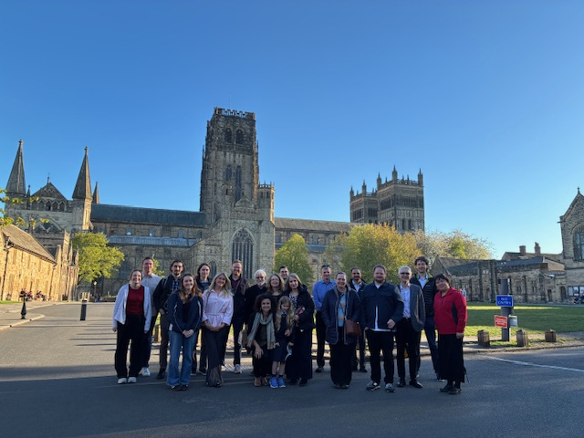
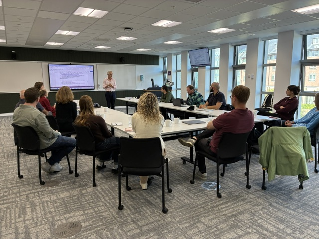
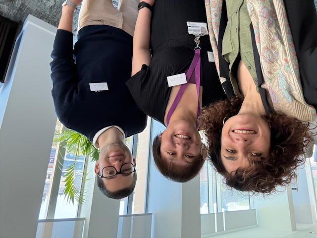
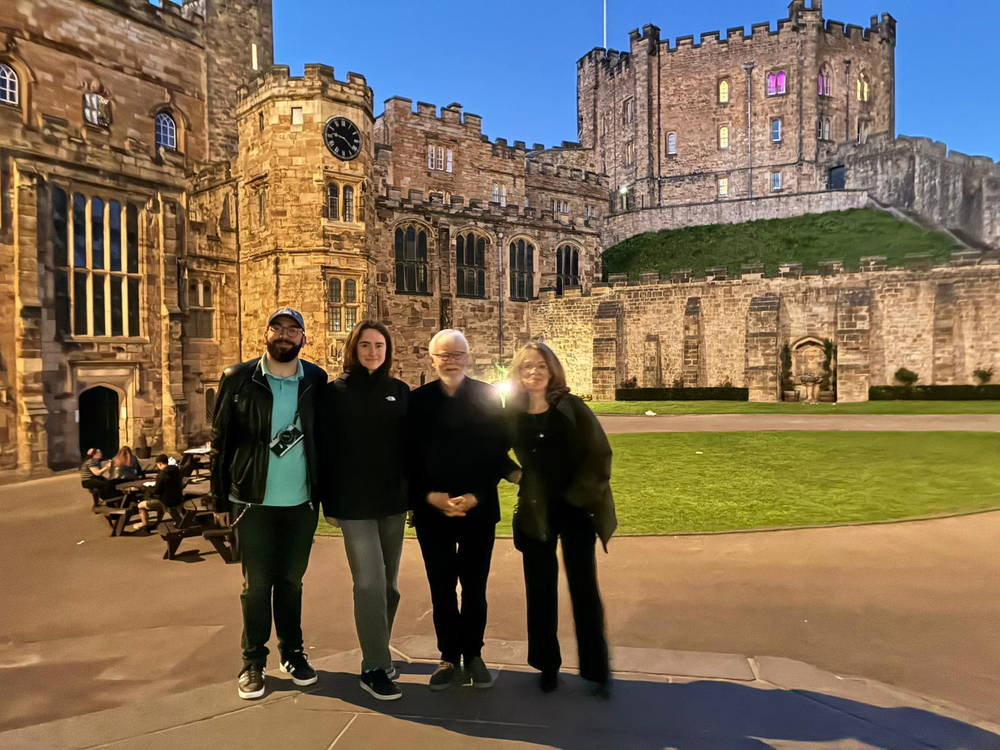

Aurora Cruz-Cabeza
Principal Investigator
People
MoSS brings together scientists and engineers working across crystallisation, crystal engineering, diffraction, modelling, engineering, data and artificial intelligence.
Our people
MoSS brings together researchers, technical specialists, students and project management across Durham, Leeds and Manchester.
Our team spans crystallisation, crystal engineering, diffraction, modelling, chemical and mechanical engineering, data science and artificial intelligence.
Contact MoSS
Team directory
A collaborative programme built across Durham University, the University of Leeds and the University of Manchester.
Durham University
Principal Investigator
Co-Investigator
Co-Investigator · AI & data
Postdoctoral Research Associate
Postdoctoral Research Associate
Postdoctoral Research Associate
Postdoctoral Research Associate
PhD researcher
PhD researcher
PhD researcher
Crystallography Service Manager
Senior Experimental Officer · Crystallography
MoSS Project Manager
University of Leeds
Co-Investigator
Co-Investigator
Postdoctoral Research Associate
Technical specialist · HPLC
PhD researcher
Technical Specialist – SEM
The University of Manchester
Co-Investigator
Co-Investigator
Postdoctoral Research Associate
PhD researcher
The wider community


